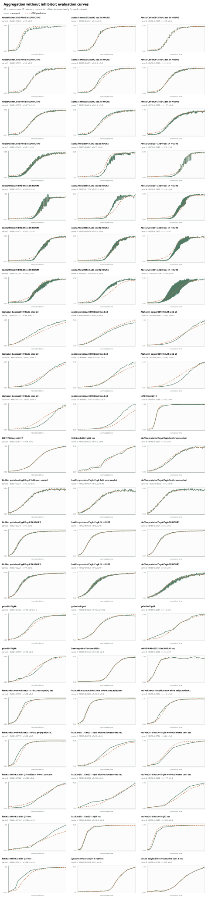
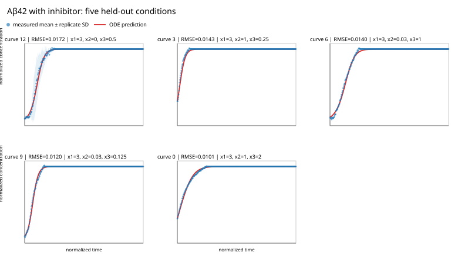

Proteins normally fold into the shapes their biological work requires. But some of them misfold and form aggregates. Small clusters can grow into long amyloid fibrils, and the process is linked to diseases including Alzheimer's, Parkinson's, and type 2 diabetes.
The same broad pattern appears in many systems: a slow beginning, a rapid rise in aggregate concentration, and finally saturation. In most cases pre-existing aggregates catalyze further aggregation, and higher monomer concentrations speed up growth. An inhibitor can slow this reaction down in several different ways.
Knowing the governing equation is important for identifying which stage of aggregation a treatment should target. A drug might bind free monomers and slow primary nucleation, or cap fibril ends and slow elongation, or coat fibril surfaces and suppress secondary nucleation. These interventions can produce similar-looking bulk curves while having very different effects on the species that cause damage. A kinetic model therefore helps choose the target, dose, and treatment window instead of optimizing only for a slower-looking curve.
The history of Alzheimer's trials shows why this distinction matters. A trial of gantenerumab and solanezumab tested two antibodies against the same protein. Neither slowed cognitive decline, but they fell short for different reasons. Solanezumab binds soluble monomer and not fibrils; it shifted amyloid-β in cerebrospinal fluid, yet plaques, tau, and neurofilament light chain did not move, so the aggregate pool was never really touched. Gantenerumab binds aggregated amyloid-β; it did reduce plaques, lower total tau and phospho-tau181, and slow the rise of neurofilament light chain, but symptomatic participants had already declined by the time the dose reached its target.
So one arm bound a species that does not drive the process, and the other bound the right species too late. Neither outcome proves that a missing rate equation was the cause. But those are the two choices a kinetic model exists to inform: which species to go after, and how hard and how early to do it.
Parkinson's disease gives a more recent example, and one where the species question was taken seriously from the start: prasinezumab is an antibody chosen to bind aggregated α-synuclein rather than the monomer. It still has not produced a clear clinical effect. The phase 2 PASADENA trial found no meaningful effect on the primary global and imaging measures of progression, and the larger phase 2b PADOVA trial missed its primary endpoint as well, though narrowly with a hazard ratio of 0.84 for time to confirmed motor progression (95% CI 0.69–1.01, p = 0.066), with a median of 61.1 weeks on drug against 49.7 on placebo. A phase 3 trial is now running on the strength of that trend.
Prasinezumab is a full-size antibody, so it cannot cross into a neuron, and α-synuclein aggregates are largely intracellular. The only α-synuclein the drug can reach is whatever is briefly outside a cell, in transit from one neuron to the next. Its entire ceiling is therefore set by a single quantity: how much of the aggregate burden is driven by seeds arriving from elsewhere, rather than by aggregation amplifying itself inside a cell that is already affected.
That is a question about the relative weight of two terms in a rate equation, which is what this kind of search is built to estimate. The Aβ42 equation below is a clean example: the seed enters as its own additive term, separate from the route that feeds on the current aggregate level. Fitting that structure to seeded data gives some idea of how much a given amount of incoming seed actually buys and the cross-protein set used here already contains seeded α-synuclein measurements. If self-amplification dominates once a cell is seeded, blocking the next seed has a low ceiling however good the antibody is. Meisl and colleagues asked a version of this of tau in Alzheimer's disease and found that from Braak stage III onward, local replication, not spreading between brain regions, sets the pace in the neocortex, with simulated threefold cuts to spreading barely moving the trajectory. The tau answer does not transfer automatically to α-synuclein, but it shows the question is answerable, and far more cheaply than by a phase 3.
The goal: find one compact differential-equation structure that explains complete aggregation curves across several experimental conditions, not a separate equation for every curve.
A common machine-learning model can learn a mapping from inputs to outputs. Here, however, we want a readable rule for the rate of change:
In this notation, \(c\) is normalized aggregate concentration, \(\tau\) is normalized time, \(m_0\) is initial monomer concentration, \(s_0\) is initial seed concentration, and \(I_0\) is initial inhibitor concentration. In experiments without an inhibitor, \(I_0\) is absent.
There is already a well-established way to do this. In the standard approach you pick a mechanism from a library of integrated rate laws like primary nucleation, elongation, fragmentation, secondary nucleation and fit it globally to a family of curves, with the rate constants shared across every curve in the family. Meisl and colleagues' AmyloFit protocol does exactly this, down to the step of working out where in the reaction network an inhibitor acts. It works, and it has the large advantage that every fitted parameter means something physical.
What it cannot do is propose a form that is not already in the library. The question here is what happens when the functional form is left open. We do not choose \(f\) in advance; we search over equations and let held-out experimental curves decide which structures survive. This is a form of symbolic regression: the output is a mathematical expression rather than a black-box predictor. The price of the extra freedom is that a term which improves the fit no longer arrives with a guaranteed mechanistic reading.
We do this equation search for two cases. The first uses disease-relevant datasets with no inhibitor present, and asks whether one structure can describe aggregation across many different proteins at once. The second case adds inhibitor concentration as a further input, and asks where in that backbone the inhibitor acts.
The equation-search loop
The outer search uses AdaEvolve. A language model proposes a Python program containing a symbolic equation, receives measured feedback, and revises the program. In the inhibitor run, four proposals are generated in parallel across four search groups, for up to 100 rounds. Despite the repository's pysr_symbolic folder name, this is not a conventional inner PySR search: AdaEvolve changes the equation structure, SymPy represents it, and SciPy fits its constants and integrates it.
For each candidate structure, numerical constants are fitted with scipy.optimize.least_squares. The trajectory is then produced with scipy.integrate.odeint. The inhibitor search is allowed to propose hidden states, such as free inhibitor or aggregate number, but each extra equation pays a 1% complexity penalty.
Four constraints decide what counts as a good answer. The structure is shared, so the same equation form has to work across every dataset in an experiment, while the numerical rate constants are fitted independently for each one. Within a dataset this is the same global fitting AmyloFit uses, and only the form is asked to transfer between proteins. Whole curves are held out rather than random time points, so the test set is a set of unseen experimental conditions rather than gaps in a curve the equation has already seen.
To prevent long flat plateaus from hiding that problem, the objective combines normalized mean squared error (NMSE) with a curve-shape loss:
The shape term compares neighboring slopes and the times at which each curve reaches 10%, 25%, 50%, 75%, and 90% of its measured rise, where the baseline and plateau are read off the ends of each measured curve. When the same shape term is fed to the constant fitter, every trajectory has equal influence; the reported score weights the hardest curves slightly more. The final score is \(1/(1+L)\), with a 1% penalty for each equation beyond the first.
See the full scoring objective
For curve \(j\), slope mismatch is bounded to keep one very poor curve from making the score uninformative:
Timing loss averages the absolute difference in measured and predicted crossing times, with each level's contribution capped at 1 so a curve that never crosses cannot dominate. The per-curve loss is half slope and half timing. Dataset shape loss is 70% mean curve loss and 30% of its 90th percentile, giving difficult curves extra weight.
Aggregation without an inhibitor
The first search asks for a reusable equation across disease-relevant, non-inhibited protein datasets. The search dataset covers proteins amyloid-β40, amyloid-β42, α-synuclein, huntingtin-derived polyglutamine fragments, hnRNPA1, hnRNPA2, IAPP, insulin, lysozyme, prion protein, serum amyloid A, haemoglobin, gelsolin, an SH3 domain, β-parvalbumin (Gad m 1), and the biofilm proteins CsgA and RdlB. Inputs include normalized time, initial monomer, initial seed, and the current aggregate state. The loader finds 39 cleaned data files; 17 datasets contributed validation points to the reported aggregate result. Datasets with enough curves hold out complete trajectories. A separate cross-protein group fits new constants on each evaluation dataset, so it tests whether the equation structure transfers, not zero-shot prediction with fixed constants.
AdaEvolve ran for 30 iterations across two search groups, with each proposal screened on five datasets before a promising one was evaluated on all 17 scoring datasets. The search first improved a bounded polynomial model with a time-driven onset, then replaced an unbounded cubic feedback term with saturating Hill-like autocatalysis at iteration 21. At iteration 23 it made the half-saturation level depend on monomer concentration, producing the stored winner; later proposals only matched or slightly trailed it. The main bottleneck was fitting as many as 11 constants separately across many datasets: late full evaluations could take close to 20 minutes, while two exploratory proposals failed because of a non-finite derivative and a mismatched constant initializer.
The stored iteration-23 winner can be written in a shorter structural form:
The factor \(P(m_0)-c\) makes the rate vanish at a fitted capacity, with \(P\) allowing the plateau to shift modestly with monomer concentration. The onset term grows with time and initial seed, so seeded curves can leave the lag phase earlier. The second route combines linear and quadratic dependence on the current aggregate level, but the denominator \(h(m_0)+c^2\) prevents that feedback from growing without limit and lets monomer shift its half-saturation point. These labels are useful descriptions of the fitted mathematics, not proof that every protein follows the same microscopic pathway.
Aβ42 aggregation with an inhibitor
The inhibitor experiment contains 15 positive-inhibitor conditions: three seed levels (1 µM, 0.03 µM, and no seed) crossed with five inhibitor doses between 0.125 µM and 2 µM. Each condition has three repeats. Repeats are aligned and averaged, ten complete curves are used to fit constants, and five complete curves, covering all five inhibitor doses, are held out.
The run was scheduled for 100 iterations across four search groups, with four proposals attempted in parallel at each iteration. Early winners used a capacity factor, a separate seed term, and static inhibitor attenuation; several rounds then added quadratic state terms or hidden inhibitor and fibril-number states, but these brought only small gains or paid a complexity penalty. By iteration 18 the search had found that a simpler one-state equation with time-weakening inhibition performed better; iteration 25 reached the final equation structure, and iteration 26 produced the stored winner shown below. The model-cost limit was reached after iteration 30, so iterations 31–100 generated no new proposals; even before that point, near-identical scores and the 1% charge for extra equations made richer hidden-state systems difficult to justify from five held-out curves.
Despite being allowed hidden states, the best completed run selected one measured-state equation, and the coefficients below match the stored iteration-26 result:
The factor \(0.97056-c\) drives the normalized aggregate level toward a finite ceiling. Inside the brackets, the additive \(5.21986s_0\) term gives seed a direct route into growth, while \(15.3773m_0c\) describes a route that depends on both monomer and aggregates already present. The attenuation in its denominator factors into a dose-saturating part, \(I_0/(I_0+2.49676)\), and a persistence-like part, \(I_0/(14.6955\tau+I_0)\), so inhibition is strongest early and weakens with time. The seed term remains outside that attenuation, meaning the fitted inhibitor acts on the autocatalytic-like route rather than directly on seeded growth. Binding, persistence, and autocatalysis are plausible readings of this structure, not molecular mechanisms established by the fit.
Results
Without inhibitor
This is the harder transfer setting: one structure spans several protein datasets, with constants fitted per dataset.
With inhibitor
This is a focused single-protein setting. The metrics are not directly comparable with the cross-protein experiment.
See every non-inhibited evaluation curve
The green line is the measured trajectory and the dashed orange line is the ODE prediction. The figure contains all 63 validation curves across the 17 scored datasets; constants are fitted separately for each dataset while the equation structure remains fixed.

See every inhibited Aβ42 evaluation curve
Blue points show the measured mean with replicate variability, and the red line is the ODE prediction. These are the five complete inhibitor conditions withheld while the constants were fitted.

For the inhibitor result, the pointwise fit is already strong. Most of the remaining objective comes from the shape term:
Contribution to the August 18 inhibitor model's combined loss.
The fitted curves generally reproduce the baseline and plateau well. The largest visible mismatch is around the transition: a predicted rise can be slightly early, late, too sharp, or too broad. The no-seed condition is the hardest.
Schematic explanation of the reported error pattern, not a plot of a particular held-out curve.
Taken together, these experiments show that equation search can recover a common kinetic backbone from complete aggregation curves without giving up interpretability. Across the non-inhibited proteins, the selected equation combines a finite aggregation capacity, seed-dependent onset, and saturating self-amplification. In the Aβ42 experiment, the same broad picture survives the addition of an inhibitor: the inhibitor suppresses the autocatalytic route while the seed contribution remains separate. The agreement on held-out curves suggests that these features capture reusable structure rather than the details of one experimental condition.
The result is still a kinetic hypothesis, not a confirmed molecular mechanism. The inhibitor equation was not tested at zero inhibitor, all of its curves used the same monomer concentration, and averaging repeats may have broadened the transition that the model finds hardest to reproduce. Different fitted constants may also compensate for one another, while a one-state equation may hide distinctions between free inhibitor, aggregate number, and aggregate mass. The present data therefore support where inhibition enters the fitted rate law, but they cannot by themselves identify the molecular interaction responsible for it.
The next step is to test the equation under conditions that can distinguish those explanations: include zero-inhibitor controls and several monomer concentrations, fit repeats individually, constrain positive rate constants, and compare the one-state equation with a small physically motivated hidden-state model. The value of equation search is not that it replaces mechanistic experiments, but that it turns a large space of possible mechanisms into a compact set of testable kinetic hypotheses.
References and further reading
- Chiti, F. & Dobson, C. M. Protein Misfolding, Amyloid Formation, and Human Disease. Annual Review of Biochemistry, 2017.
- Knowles, T. P. J. et al. An Analytical Solution to the Kinetics of Breakable Filament Assembly. Science, 2009.
- Cohen, S. I. A. et al. Proliferation of amyloid-β42 aggregates occurs through a secondary nucleation mechanism. PNAS, 2013.
- Meisl, G. et al. Molecular mechanisms of protein aggregation from global fitting of kinetic models. Nature Protocols, 2016.
- Meisl, G. et al. In vivo rate-determining steps of tau seed accumulation in Alzheimer's disease. Science Advances, 2021.
- Salloway, S., Farlow, M. et al. A trial of gantenerumab or solanezumab in dominantly inherited Alzheimer's disease. Nature Medicine, 2021.
- Pagano, G. et al. Trial of Prasinezumab in Early-Stage Parkinson's Disease (PASADENA). New England Journal of Medicine, 2022.
- Nikolcheva, T. et al. Efficacy and safety of intravenous prasinezumab in individuals with early-stage Parkinson's disease on stable symptomatic monotherapy (PADOVA). The Lancet, 2026.